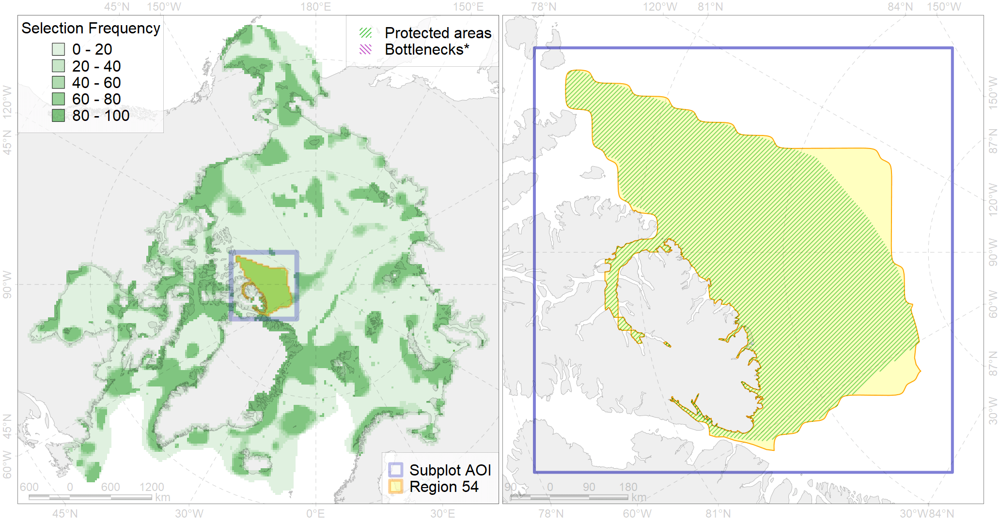

Region 54
Region 54
“ArcNet” scenario 33 achievement for region 54.
Use Accenter for advanced mode.

0
CFs inside of Region completely
5
CFs inside of Region at quarter
11
Complete-targets achievement by Region
16
Half-targets achievement by Region
| CF | Name | Target Achievement for Region | Proportion of Target Achievement in Region | Amount Proportion in Region |
|---|---|---|---|---|
| 7135 | III.1.1.2. Archipelago outer shelf areas of low and median profile | 633.3% | 88.9% | 52.2% |
| 7140 | III.1.2.1. Archipelago north slope | 386.7% | 94.6% | 42.8% |
| 7022 | Canada - North Greenland bathyal region | 373.3% | 67.4% | 35.6% |
| 3051 | Multiyear Ice distribution in September in the Northern Canadian Archipelago LME | 143.9% | 69.4% | 26.0% |
| 7197 | VI.3.2. Terraces | 57.5% | 40.7% | 25.0% |
| 7200 | VI.4. Mendeleev and Alpha Ridges VI.4.1. Plateaus | 43.9% | 43.8% | 22.9% |
| 2014 | Bearded seal whelping areas in the north of the Canadian Archipelago | 84.2% | 54.1% | 20.3% |
| 7196 | VI.3. Lomonosov Ridge VI.3.1. Plateaus | 37.1% | 37.0% | 18.9% |
| 7133 | III.1. Canadian Arctic Archipelago shelf and margin | 448.9% | 39.1% | 18.7% |
| 7199 | VI.3.7. Canyons | 42.6% | 41.6% | 17.0% |
| 7021 | Eastern Canadian Archipelago region | 169.2% | 28.1% | 16.4% |
| 7134 | III.1.1. 1. Canadian Arctic Archipelago shelf | 222.4% | 37.0% | 16.4% |
| 7141 | III.1.2.2. Archipelago north slope canyons | 134.8% | 55.3% | 16.3% |
| 7202 | VI.4.3. Ridges | 14.8% | 14.8% | 14.8% |
| 7014 | Core of Canadian - Greenland Province of Arcto-Atlantic zoogeographical region | 172.6% | 24.0% | 12.8% |
| 9020 | polar bear denning areas of AB (Arctic Basin) subpopulation distribution | 22.4% | 15.9% | 12.5% |
| 6008 | Brent goose (Branta bernicla hrota) Canadian High Arctic breeding&moulting grounds | 40.5% | 20.0% | 9.7% |
| 7181 | VII.3.3. Abyssal hills | 100.6% | 48.6% | 7.2% |
| 9001 | polar bear of the AB (Arctic Basin) subpopulation distribution | 25.3% | 25.2% | 6.7% |
| 3049 | Multiyear Ice distribution in September in the Central Arctic LME | 36.1% | 35.9% | 6.6% |
| 4074 | Fish zoogeography, Arctic Region, High-Arctic Shelf Province, Canadian-Greenland District (10A) | 87.3% | 12.9% | 6.5% |
| 7137 | III.1.1.4. Canadian Archipelago glacial troughs | 98.5% | 15.2% | 4.4% |
| 4079 | Fish zoogeography, Arctic Region, Arctic Abyssal Province (11A -Scandian, 11B - Central-Arctic and 11C - Baffin Deep-sea Districts ) | 103.5% | 17.6% | 4.2% |
| 7180 | VII.3.2. Abyssal plains | 47.6% | 47.0% | 3.1% |
| 4096 | Range of the Glacial eelpout (Lycodes frigidus) | 48.5% | 12.4% | 3.0% |
| 4053 | Range of the Fourhorn Sculpin (Myoxocephalus quadricornis) (F 45), Euro-Asian populations | 88.5% | 5.3% | 2.7% |
| 4041 | Range of the Polar Cod (Boreogadus saida) (F35) | 19.4% | 7.4% | 2.4% |
| 7033 | Northern and Eastern Greenland region | 16.8% | 3.0% | 2.2% |
| 7159 | III.5.2. NE Greenland slope | 16.9% | 4.3% | 1.9% |
| 3006 | Fast Ice distribution in the Canadian Archipelago region | 29.7% | 7.0% | 1.8% |
| 7182 | VII.3.4. Abyssal mountains | 10.6% | 8.2% | 1.8% |
| 7158 | III.5.1.2. NE Greenland glacial troughs | 13.1% | 1.8% | 1.6% |
| 7183 | VII.3.5. Deep parts of canyons (below slope) | 6.1% | 4.4% | 1.4% |
| 7018 | Amerasian bathyal region | 12.0% | 4.6% | 1.2% |
| 7157 | III.5.1.1. NE Greenland medium and low profile shelf | 17.8% | 1.7% | 1.1% |
| 4037 | Distribution of the Glacial cod (Arctogadus glacialis) (F34) | 12.6% | 3.0% | 1.1% |
| 7177 | VII.2.3. Abyssal hills | 12.3% | 11.5% | 1.1% |
| 7156 | III.5.1. Northeast Greenland shelf and slope | 6.9% | 0.9% | 0.9% |
| 4029 | Feeding area of the Arctic charr (Salvelinus alpinus), anadromous populations (F28) | 0.8% | 0.7% | 0.3% |
| 6094 | 6094 PagophileburneCanadian breeding colonies | 0.7% | 0.4% | 0.3% |
| 7136 | III.1.1.3. Archipelago inner shelf of low and medium profile | 4.5% | 0.8% | 0.3% |
| 2061 | Ringed seal circumpolar foraging areas as predicted by MIZ distribution | 1.1% | 0.6% | 0.3% |
| 7178 | VII.2.4. Abyssal mountains | 1.9% | 0.9% | 0.2% |
| 4055 | Range of the Shorthorn Sculpin (Myoxocephalus scorpius) (F 46), American populations | 3.5% | 0.2% | 0.1% |
| 7024 | Western Canadian archipelago region | 0.8% | 0.7% | 0.1% |
| 3020 | Marginal Ice Zone distribution in April in the Northern Canadian Archipelago LME | 0.8% | 0.1% | 0.1% |
| 3126 | polynya Baffin | 0.2% | 0.1% | 0.0% |
| 7023 | Canada Basin abyssal region | 0.5% | 0.5% | 0.0% |
| 3033 | Marginal Ice Zone distribution in July in the Northern Canadian Archipelago LME | 0.1% | 0.1% | 0.0% |
| 9014 | polar bear of the NB (Northern Beaufort Sea) subpopulation distribution | 0.0% | 0.0% | 0.0% |
| 4078 | Fish zoogeography, Arctic Region, High-Arctic Shelf Province, Wrangel – Beaufort District (10E) | 0.0% | 0.0% | 0.0% |
| 5112 | Arctic Cetaceans (beluga, bowhead, narwhal) winter habitats as predicterd by MIZ | 0.0% | 0.0% | 0.0% |
| 7176 | VII.2.2. Abyssal plains | 0.0% | 0.0% | 0.0% |